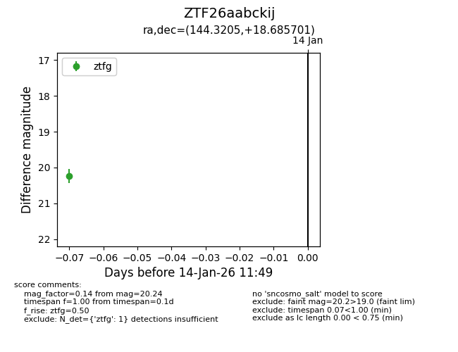
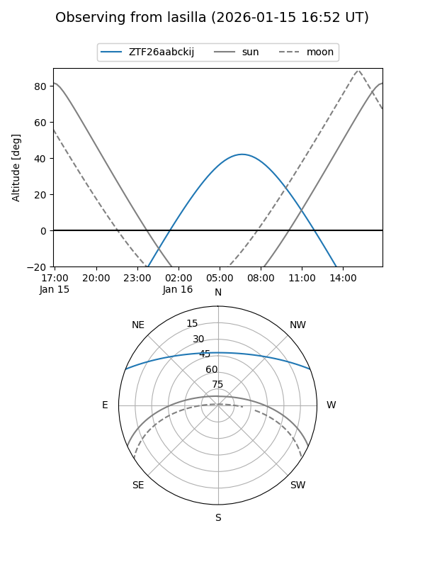
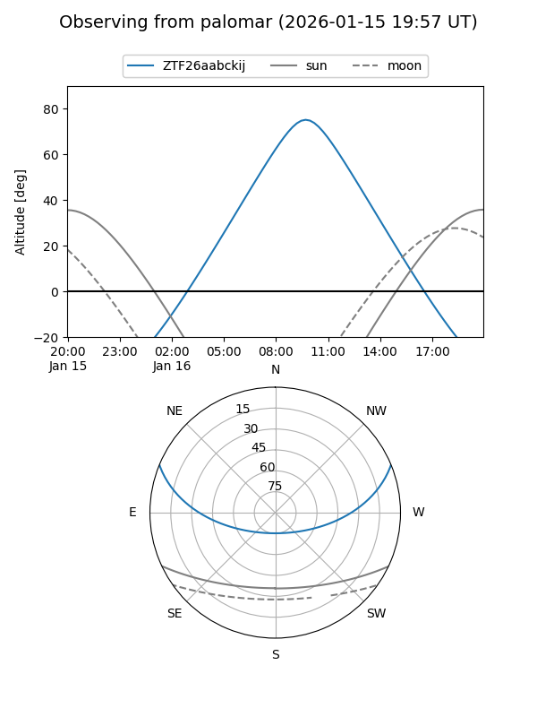

ZTF26aabckij
Target ZTF26aabckij at 2026-01-16 11:55
Aliases and brokers:
FINK: link
Lasair: link
ALeRCE: link
alt names
ZTF26aabckij (ztf,fink_ztf)
Coordinates:
equatorial (ra, dec) = 144.3205,+18.68570
equatorial (HMS+DMS) = 09:37:16.93,+18:41:08.52
galactic (l, b) = (213.0019,+44.77277)
Flags:
Photometry:
last ztfg=20.24
1 ztfg detections
Lightcurve

Visibility


Additional plots